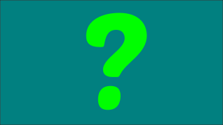

|  |
Este é un prototipo de xogo para infantil. Trátase de que identifiquen a palabra que aparece escrita cunha das dúas imaxes que aparecen embaixo. Para comezar hai que premer no botón e logo na figura que corresponda.
A idea é facer unha planilla para o xogo que calquera poida modificar para usar coas imaxes e palabras que queira traballar.